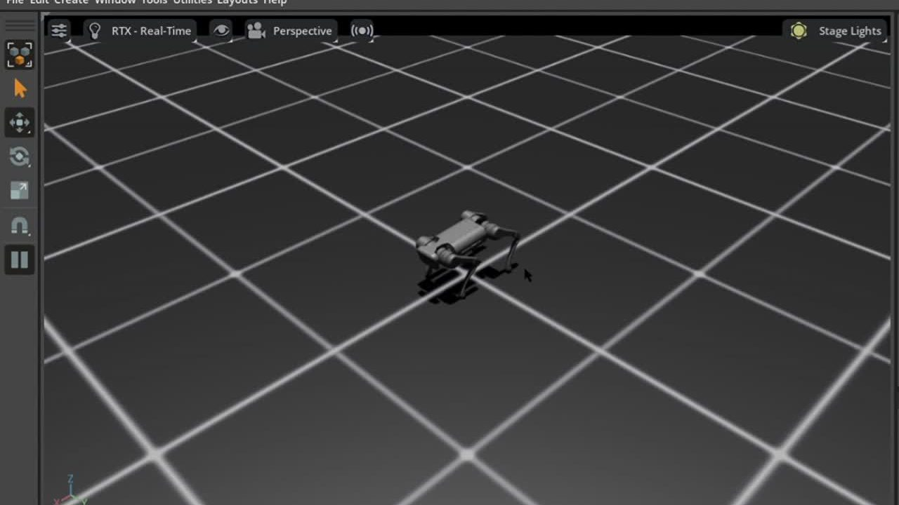
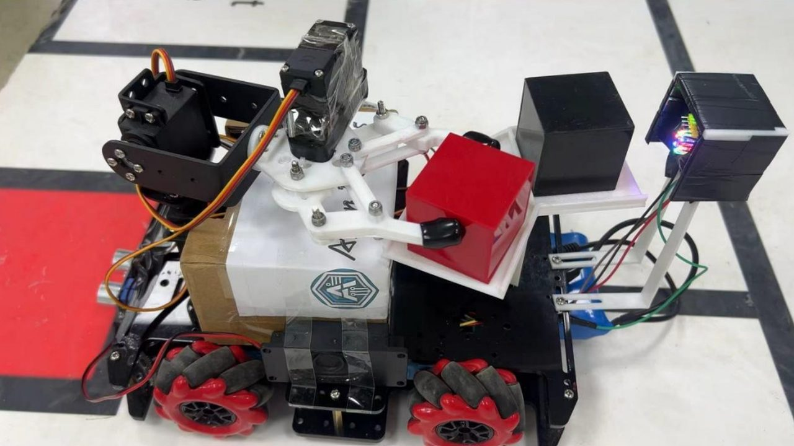
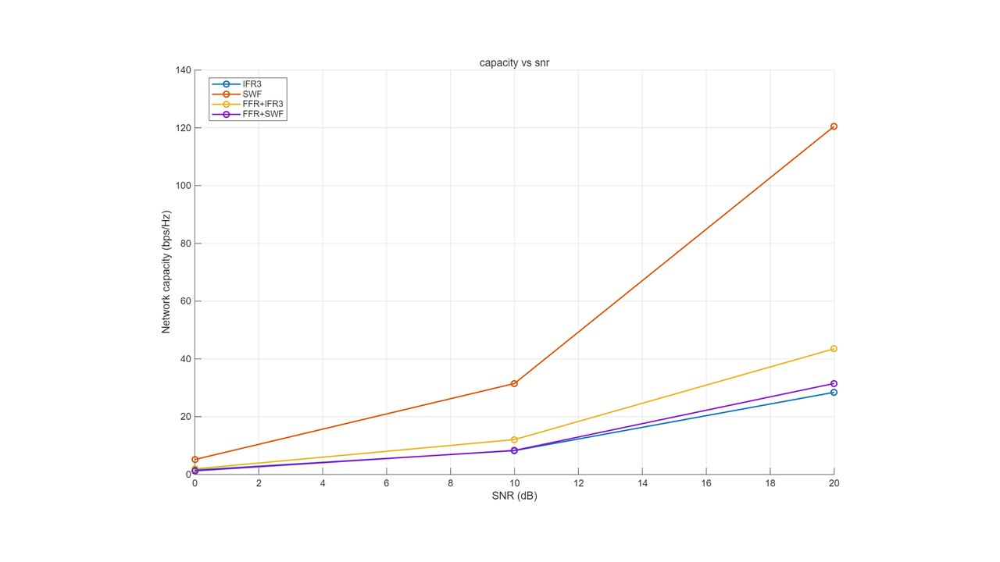

Unitree A1 仿真控制
分层 RL+MPC 仿真控制链路；600 步 PPO +0.9338 m ≈ 手写基线 +0.9339 m；定位约 872 步长时域失稳机制链，经历 16 次训练系统排错。
通信工程本科 · 港大 EEE 硕士（2026.09 入学）· 目标岗位：机器人控制算法工程师 / 解决方案工程师 / 嵌入式软件开发。
聚焦机器人控制、嵌入式系统与工程落地；项目覆盖 RL+MPC 仿真控制、Arduino 多传感器联调、5G 系统级仿真与 C 语言二进制数据处理。

分层 RL+MPC 仿真控制链路；600 步 PPO +0.9338 m ≈ 手写基线 +0.9339 m；定位约 872 步长时域失稳机制链，经历 16 次训练系统排错。

6 人团队队长 + 软件工程师；FSM 多传感器控制；转弯成功率 30%→接近 100%，云台双物块方案省时 43%。

第一作者综述论文（CSIC 2024）+ MATLAB 自主复现 19-cell 仿真；实测 FFR 使固定分配边缘 SINR +13%，趋势断言脚本化全通过。
完整版中文简历可直接下载。